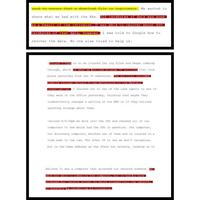
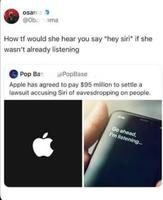

0




0
0
0
An anonymous reader shares a column: I'm going to take the diplomatic hat off here and say with brutal honesty: basically everybody in the music business hates Spotify except for the people who work there. It's a platform that sucks artists for everything they have, it actively prevents community building, and, despite all of that, the platform still struggles to maintain a healthy profit margin.
The streaming business model is fundamentally broken. And eventually, its demise will become more and more obvious to recognize. I'll break down exactly why the DSP era is coming to a grinding halt, why the major labels are quietly terrified, and why the artists who don't pivot now are going to go down with the ship.
[...] Jimmy Iovine put it bluntly: "The streaming services have a bad situation, there's no margins, they're not making any money." This model only works for Apple, Amazon, and Google, because they don't need their music platforms to be wildly profitable. Amazon uses music as a loss-leader to keep you paying for Prime. Apple uses it to sell $1,000 iPhones. As for Spotify, or any standalone music streaming company, they're kind of screwed. And guess what -- when the platform's margins are structurally squeezed, guess who gets squeezed first? The artists.
[...] What if Jimmy is right? If the DSPs are "minutes away from obsolete," what replaces them? Well, I'm not sure the DSPs are going to disappear overnight, but if you're an artist or a manager trying to sustain yourself in this evolving music economy, the answer is direct ownership. The artists who will survive the next five years are the ones who are quietly shifting their focus away from the "ATM Machine."
They are building their own cultural hangars. They are capturing phone numbers on Laylo. They are driving fans to private Discord servers. They are focusing on ARPF (Average Revenue Per Fan) through high-margin merch, vinyl, and hard tickets, rather than begging for fractions of a penny from a playlist placement. We are witnessing the death of the "Mass Audience" and the birth of the "Micro-Community."
Read more of this story at Slashdot.
The $200 billion video game industry is caught between studios eager to cut ballooning development costs through AI and a player base that has grown openly hostile to the technology after a string of visible blunders.
As Bloomberg news, Arc Raiders, a surprise hit from Stockholm-based Embark Studios that sold 12 million copies in three months, was briefly vilified online for its robotic-sounding auto-generated voices -- even as CEO Patrick Soderlund insists AI was only used for non-essential elements. EA's Battlefield 6 and Activision's Call of Duty: Black Ops 7 both drew gamer anger this winter over thematically mismatched or poorly generated graphics, and Valve's Steam has added labels to flag games made using AI.
Some 47% of developers polled by research house Omdia said they expect generative AI to reduce game quality, and PC gamers -- now facing inflated hardware prices from AI-driven demand for graphics chips -- have turned reflexively antagonistic.
Read more of this story at Slashdot.
An anonymous reader shares a report: While some see AI as a tool to be used, its specific use and how it is deployed responsibly is being heavily debated online across a wide range of industries. In terms of journalistic content, and in this particular instance, reviews, review aggregator Metacritic has taken a firm stance on content published and submitted to their platform, that have been generated by artificial intelligence in some way.
In a statement by co-founder Marc Doyle, sent to Gamereactor, he says this: "Metacritic has been a reputable review source for a quarter century and has maintained a rigorous vetting process when adding new publications to our slate of critics. However, in certain instances such as a publication being sold or a writing staff having turned over, problems can arise such as plagiarism, theft, or other forms of fraud including AI-generated reviews. Metacritic's policy is to never include an AI-generated critic review on Metacritic and if we discover that one has been posted, we'll remove it immediately and sever ties with that publication indefinitely pending a thorough investigation."
So, what is this about specifically? Well, it's probably a sound guess, that this pertains to Videogamer's review of Resident Evil 9: Requiem, which was removed from the platform after a barrage of comments accusing the review of being AI-written, and for the author of being made up.
Read more of this story at Slashdot.
An anonymous reader shares a report: OpenAI CEO Sam Altman wrote in a memo to staff that he will draw the same red lines that sparked a high-stakes fight between rival Anthropic and the Pentagon: no AI for mass surveillance or autonomous lethal weapons. If other leading firms like Google follow suit, this could massively complicate the Pentagon's efforts to replace Anthropic's Claude, which was the first model integrated into the military's most sensitive work. It would also be the first time the nation's top AI leaders have taken a collective stand about how the U.S. government can and can't use their technology.
Altman made clear he still wants to strike a deal with the Pentagon that would allow ChatGPT to be used for sensitive military contexts. Despite the show of solidarity, such a deal could see OpenAI replace Anthropic if the Pentagon follows through with its plan to declare the latter a "supply chain risk."
Read more of this story at Slashdot.
Netflix is walking away from a deal to buy Warner Bros. Discovery's studio and streaming assets after the WBD board on Thursday deemed a revised bid by Paramount Skydance to be a superior offer. From a report: Earlier this week, Paramount raised its bid to buy the entirety of WBD to $31 per share, up from $30 per share, all cash. It was the latest amendment to Paramount's multiple offers in recent months -- and since moving forward with a hostile bid to buy the company -- and it's now unseated a deal between WBD and Netflix to sell the legacy media company's studio and streaming businesses for $27.75 per share.
Last week, Netflix granted WBD a seven-day waiver to reengage with Paramount, resulting in the higher bid. Paramount's offer is for the entirety of WBD, including its pay-TV networks, such as CNN, TBS and TNT. Netflix had four business days to make changes to its own proposal in light of Paramount's superior bid, the WBD board said in a statement Thursday. Instead, the decision by the streaming giant to walk away puts a pin in a drawn-out saga that saw amended offers from both bidders.
Read more of this story at Slashdot.
OpenAI has closed what is now the largest private financing in history -- a $110 billion round at a $730 billion pre-money valuation that more than doubles the $40 billion raise it completed just a year ago, itself a record for a private tech company at the time.
Amazon invested $50 billion, SoftBank put in $30 billion, and Nvidia committed $30 billion, and additional investors are expected to join as the round progresses. The valuation is a sharp jump from the $500 billion OpenAI commanded in a secondary financing in October, and the round dwarfs recent raises by rivals Anthropic ($30 billion) and xAI ($20 billion).
The company has been telling investors it is now targeting roughly $600 billion in total compute spend by 2030, a more measured figure than the $1.4 trillion in infrastructure commitments CEO Sam Altman had touted months earlier. OpenAI is projecting more than $280 billion in total revenue by 2030, split roughly equally between consumer and enterprise. ChatGPT now has over 900 million weekly active users and more than 50 million paying subscribers.
Read more of this story at Slashdot.
An anonymous reader quotes a report from The Register: Ballooning memory prices are forecast to kill off entry-level PCs, leading to a decline in global shipments this year -- and a similar effect is going to hit smartphones. Analyst biz Gartner is projecting a drop in PC shipments of more than 10 percent during 2026, and a decline of around 8 percent for smartphones, all due to the AI-driven memory shortage. Some types of memory have doubled or quadrupled in price since last year, and Gartner believes DRAM and NAND flash used in PCs and phones is set for a further 130 percent rise by the end of 2026.
The upshot of this is that the budget PC will disappear, simply because vendors won't be able to build them at a price that will satisfy cost-conscious buyers, according to Gartner research director Ranjit Atwal. "Because the price of memory is increasing so much, vendors lose the ability to provide entry-level PCs -- those below about $500," he told The Register. PC makers could just raise the price of their cheap and cheerful boxes to above that level to compensate for the memory hike, however, price-sensitive buyers simply won't bite, he added.
Another factor expected to add to declining fortunes of the PC industry this year is AI devices -- systems equipped with special hardware for accelerating AI tasks, typically via a neural processing unit (NPU) embedded in the CPU. These systems were predicted to take the market by storm, but they require more memory to support AI processing and vendors like to mark them up to a premium price. "Historically, downgrading specifications was the way to go when prices were being squeezed, but that's difficult here," Atwal said. "The thinking was that the average price [of AI PCs] would fall this year, and lead to more adoption," said Atwal, "but that's not happening." The lack of killer applications isn't helping either.
Read more of this story at Slashdot.
sciencehabit quotes a report from Science Magazine: For decades, planetary scientists have pored over a mystery hidden within the Moon rocks retrieved by Apollo astronauts in the 1960s and '70s. Minerals in the rocks record the imprint of a magnetic field, nearly as powerful as Earth's, that existed more than 3.5 billion years ago and seemed to persist for millions of years. But generating a magnetic field requires a dynamo -- a churning, molten core -- and most researchers believed the Moon's tiny core would have long since cooled off, 1 billion years after it formed. Corroborating that picture are other ancient Moon rocks of about the same age that suggest the field was weak -- leaving planetary scientists baffled.
Now, researchers are proposing a new way to solve the puzzle. A paper published today in Nature Geoscience theorizes that between 3.5 billion and 4 billion years ago, blobs of titanium-rich magma melted episodically just above the core, rising in plumes that drove volcanic eruptions on the surface. By intermittently stirring up the Moon's core, these bouts of melting would have caused the Moon's magnetic field to flicker on in short, powerful bursts. The paper "links a few different concepts that people were thinking about separately, but hadn't actually brought together," says Sonia Tikoo, a planetary geophysicist at Stanford University who was not involved in the study.
Read more of this story at Slashdot.
An anonymous reader quotes a report from the Associated Press: Anthropic CEO Dario Amodei said Thursday the artificial intelligence company "cannot in good conscience accede" to the Pentagon's demands to allow wider use of its technology. The maker of the AI chatbot Claude said in a statement that it's not walking away from negotiations, but that new contract language received from the Defense Department "made virtually no progress on preventing Claude's use for mass surveillance of Americans or in fully autonomous weapons."
The Pentagon's top spokesman has reiterated that the military wants to use Anthropic's artificial intelligence technology in legal ways and will not let the company dictate any limits ahead of a Friday deadline to agree to its demands. Sean Parnell said Thursday on social media that the Pentagon "has no interest in using AI to conduct mass surveillance of Americans (which is illegal) nor do we want to use AI to develop autonomous weapons that operate without human involvement."
Anthropic's policies prevent its models, such as its chatbot Claude, from being used for those purposes. It's the last of its peers -- the Pentagon also has contracts with Google, OpenAI and Elon Musk's xAI -- to not supply its technology to a new U.S. military internal network. Parnell said the Pentagon wants to "use Anthropic's model for all lawful purposes" but didn't offer details on what that entailed. He said opening up use of the technology would prevent the company from "jeopardizing critical military operations." "We will not let ANY company dictate the terms regarding how we make operational decisions," he said. In a post on X, Parnell said Anthropic will "have until 5:01 PM ET on Friday to decide. Otherwise, we will terminate our partnership with Anthropic and deem them a supply chain risk for DOW."
Read more of this story at Slashdot.
An anonymous reader shares a report: Worldwide smartphone shipments are forecast to decline 12.9% year-on-year (YoY) in 2026 to 1.1 billion units, according to the International Data Corporation (IDC) Worldwide Quarterly Mobile Phone Tracker. This decline will bring the smartphone market to its lowest annual shipment volume in more than a decade. The current forecast represents a sharp decline from our November forecast amid the intensifying memory shortage crisis.
Read more of this story at Slashdot.
A sprawling Chinese influence operation -- accidentally revealed by a Chinese law enforcement official's use of ChatGPT -- focused on intimidating Chinese dissidents abroad, including by impersonating US immigration officials, according to a new report from ChatGPT-maker OpenAI. From a report: The Chinese law enforcement official used ChatGPT like a diary to document the alleged covert campaign of suppression, OpenAI said. In one instance, Chinese operators allegedly disguised themselves as US immigration officials to warn a US-based Chinese dissident that their public statements had supposedly broken the law, according to the ChatGPT user. In another case, they describe an effort to use forged documents from a US county court to try to get a Chinese dissident's social media account taken down.
The report offers one of the most vivid examples yet of how authoritarian regimes can use AI tools to document their censorship efforts. The influence operation appeared to involve hundreds of Chinese operators and thousands of fake online accounts on various social media platforms, according to OpenAI.
Read more of this story at Slashdot.
theodp writes: On Tuesday, Microsoft GM of Education and Workforce Policy (and former Code.org Chief Academic Officer) Pat Yongpradit posted an obituary of sorts for coders. "Computer programmers and software developers are codified differently in the BLS [Bureau of Labor Statistics] data," Yongpradit wrote. "The modern AI-infused world needs less computer programmers (coders) and more software developers (more holistic and higher level). So when folks say that there is less hiring of computer programmers, they are right. But there will be more hiring of software developers, especially those who have adopted an AI-forward mindset and skillset. [...] The number of just pure computer programming roles has already been declining due to reasons like outsourcing, AI will just accelerate the decline."
On Wednesday, Yongpradit's colleague Allyson Knox, Senior Director of Education and Workforce Policy at Microsoft, put another AI nail in the coder coffin, testifying before the House Committee on Education -- the Workforce Subcommittee on Early Childhood, Elementary, and Secondary Education on Building an AI-ready America: Teaching in the Age of AI. "Thank you to Chairman Tim Walberg, Ranking Member Bobby Scott, Chair Kevin Kiley, Ranking Member Suzanne Bonamici and members of the Subcommittee for the opportunity to share Microsoft perspective and that of the educators and parents we hear from every day across the country," Knox wrote in a LinkedIn post.
"Three themes continue to emerge throughout these discussions: 1. Educators want support to build AI literacy and critical thinking skills. 2. Schools need guidance and guardrails to ensure student data is protected and adults remain in control. 3. Teachers want classroom-ready tools, and a voice in shaping them. If we focus on these priorities, we can help ensure AI expands opportunity for every student across the United States."
Yongpradit and Knox report up to Microsoft President Brad Smith, who last July told Code.org CEO Hadi Partovi it was time for the tech-backed nonprofit to "switch hats" from coding to AI as Microsoft announced a new $4 billion initiative to advance AI education. Smith's thoughts on the extraordinary promise of AI in education were cited by Knox in her 2026 Congressional testimony. Interestingly, Knox argued for the importance of computer programming literacy in her 2013 Congressional testimony at a hearing on Our Nation of Builders: Training the Builders of the Future. "Congress needs to come up with fresh ideas on how we can continue to train the next generation of builders, programmers, manufacturers, technicians and entrepreneurs," said Rep. Lee Terry said to open the discussion. So, are reports of computer programming's imminent death greatly exaggerated?
Read more of this story at Slashdot.
Bright Data, a company that operates one of the world's largest residential proxy networks, has been running an SDK inside smart TV apps that turns those devices into nodes for web crawling -- collecting data used by AI companies, among other clients -- and most consumers have had no idea it was happening.
The company has published more than 200 first-party apps to LG's app store alone and still lists Samsung's Tizen OS and LG's webOS as supported platforms, though LG says the SDK is "not officially supported" and its operation on webOS "is not guaranteed." Google, Amazon, and Roku have all since adopted policies restricting or banning background proxy SDKs, and Bright Data no longer supports those platforms.
Several Roku apps still running the SDK disappeared from the store after a journalist with The Verge behind this reporting contacted the company.
Read more of this story at Slashdot.
Longtime Slashdot reader ArchieBunker shares a report from NBC News: NASA revealed that astronaut Mike Fincke was the crew member who suffered a medical incident at the International Space Station in January, which prompted the agency to carry out the first evacuation due to a medical issue in the space station's 25-year history. The rare decision to cut a mission short and bring Fincke and three other crew members home early made for a dramatic week in space early this year.
In a statement released by NASA "at the request of Fincke," the veteran astronaut said he experienced a medical event on Jan. 7 "that required immediate attention" from his space station crew members. "Thanks to their quick response and the guidance of our NASA flight surgeons, my status quickly stabilized," Fincke, 58, said in the statement. [...] In his statement, Fincke thanked his Crew-11 colleagues, along with NASA astronaut Chris Williams and Russian cosmonauts Sergey Kud-Sverchkov and Sergei Mikaev, who were also aboard the space station at the time and are still in space. Fincke also thanked the teams at NASA, SpaceX and the medical professionals at Scripps Memorial Hospital La Jolla. "Their professionalism and dedication ensured a positive outcome," he said.
Fincke ended his statement by saying he is "doing very well" and still actively involved with standard post-flight reconditioning at NASA's Johnson Space Center in Houston. "Spaceflight is an incredible privilege, and sometimes it reminds us just how human we are," he said. "Thank you for all your support."
Read more of this story at Slashdot.
Nasa announced on Friday radical changes to its delayed Artemis III mission to land humans back on the moon, as the US space agency grapples with technical glitches and criticism that it is trying to do too much too soon. From a report: The abrupt shift in strategy was laid out by the space agency's recently confirmed administrator, Jared Isaacman. Announcing the changes on Friday, he said that Nasa would introduce at least one new moon flight before attempting to put humans back on the lunar surface for the first time in more than half a century, in 2028.
The new, more incremental approach would give the Nasa team a chance to test flight and refine its technology. As part of the changes, the Artemis II mission to fly humans around the moon this year, without landing, would also be pushed back from its latest scheduled launch on 6 March to 1 April at the earliest.
"Everybody agrees this is the only way forward," Isaacman told reporters at a news conference. "I know this is how Nasa changed the world, and this is how Nasa is going to do it again."
Read more of this story at Slashdot.
Axios : President Trump calls Anthropic a “radical left, woke company” and says he is directing every federal agency in the US to stop using its products — The Trump administration has decided to blacklist Anthropic in the most consequential and controversial policy decision to date …
Bloomberg : Sources: SpaceX weighs filing confidentially for an IPO as soon as March, targeting a June listing that could raise up to $50B at a $1.75T valuation — SpaceX is targeting filing confidentially for an initial public offering as soon as next month, according to people familiar with the matter …
Sarah Perez / TechCrunch : In a newly released deposition in Elon Musk's case against OpenAI, Musk attacked OpenAI's safety record, saying nobody “committed suicide because of Grok” — In a newly released deposition filed in Elon Musk's case against OpenAI, the tech executive attacked OpenAI's safety record …
Ina Fried / Axios : As part of the Amazon-OpenAI deal, the companies plan a “stateful runtime environment” for AWS, letting agents carry context forward to handle ongoing projects — A deal with OpenAI could put Amazon first to market with a new type of AI service for developers …
Om Malik / On my Om : Amazon is paying ~16x Microsoft's price per OpenAI percentage point, while getting none of Microsoft's exclusives, showing the cost of being late in AI — My word, the torrent of news keeps coming. You have hardly had time to digest the news of the $30 billion raise by Anthropic …
Kate Knibbs / Wired : OpenAI fired an employee for insider trading on prediction markets like Polymarket; Unusual Whales has flagged 77 suspected insider trades around OpenAI events — Prediction markets like Polymarket and Kalshi are big business, and some Big Tech employees are testing boundaries by making trades based on insider knowledge.
Stephanie Palazzolo / The Information : Source: OpenAI expects to raise an additional $10B from financial investors by the end of March 2026, bringing its post-investment valuation to $850B — OpenAI expects to raise an additional $10 billion from financial investors by the end of March, adding to the $110 billion it's secured from SoftBank …
Bloomberg : Two coalitions of workers, including employees of Amazon, Google, Microsoft, and OpenAI, ask their companies to join Anthropic in refusing DOD's demands — Anthropic PBC got a vote of support from Silicon Valley workers for its increasingly contentious public-relations battle with the Pentagon …
The Atlantic : Court docs from a New Mexico trial reveal internal divisions at Meta as Instagram teen safety initiatives conflicted with growth and engagement goals — Not so long ago, Mark Zuckerberg was working in overdrive to convince the world that his company was doing everything it could to protect children.
Kristin Robinson / Billboard : Suno CEO and co-founder Mikey Shulman says the AI music company hit 2M paid subscribers and $300M ARR; pitch deck: it had 1M paid subscribers in November 2025 — The AI startup reports rapid growth, strong retention rates and rising engagement. … On Wednesday, Suno CEO …
Jagmeet Singh / TechCrunch : India-based Ultrahuman launches the $479 Ring Pro, available for pre-order globally, excluding the US, after the ITC ruled in favor of Oura in a patent dispute — Ultrahuman on Friday unveiled a new smart ring with longer battery life and a redesigned form factor, as the Bengaluru-based wearable maker seeks …
Allie Garfinkle / Fortune : Flux, which offers an AI-powered platform to design PCBs for electronic devices, raised $37M, including a $27M Series B led by 8VC and a $10M Series A — Senior Finance Reporter And Author Of Term Sheet — In 2018, Matthias Wagner was leading a 100-person Burning Man camp called Hotel California.
Christine Wang / Axios : TMTG says it is in talks to spin off Truth Social into a public company, following the close of its previously announced merger with nuclear fusion startup TAE — Trump Media & Technology Group said Friday it is in talks to spin off Truth Social into a new publicly traded company.
Reuters : TikTok returns to Albania after a year-long ban, ostensibly linked to the death of a teenage boy, expired; Albania says TikTok has tightened safety measures — Social media platform TikTok is back in Albania after a year-long ban expired this month, in a case illustrating the complexity …
Jagmeet Singh / TechCrunch : Deepinder Goyal, who stepped down as Zomato's CEO, raised $54M at a $190M valuation for Temple, which aims to make high-performance wearables for elite athletes — Weeks after stepping down as CEO from food delivery service Zomato and its parent Eternal, Indian entrepreneur Deepinder Goyal …